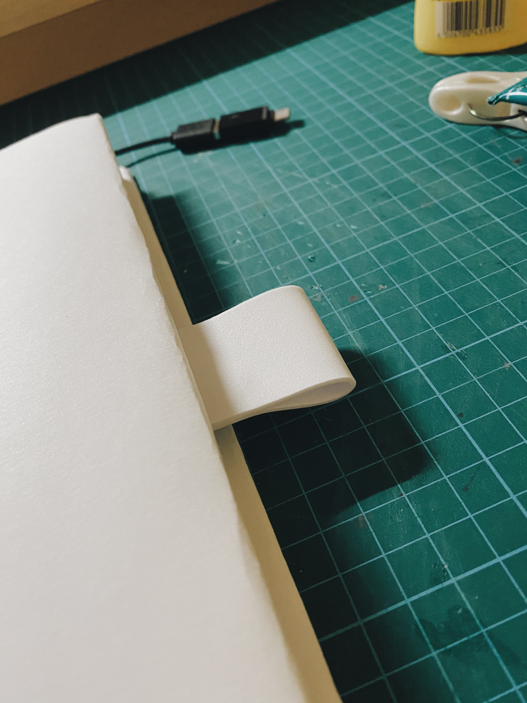

Last few things left to do was to place the microbit nicely in the book. We cut a section of the book to create a "hole" for the microbit to fit. This will create a (almost) flushed look to the book.
We also added a bookmark to allow the user to flip to the correct page where the microbit is.
To many people, a book is just a book. It contains information and beautiful images. However as we become more digitalised, we see more people being attached to their digital devices and doing almost everything through the devices, and that includes the act of reading. Ebooks make it easier for people to read on the go and having lesser load to carry. Many find the transition from physical to digital easy, but for some it is harder. In movies and tv shows, specifically cartoons, tend to exagerate the value of a "sacred book" with angelic sounds when it is opened, showing that whatever that is in the book is so sigificant and special.
Regardless of book, it has value to whoever who reads and utilises them. Our intention is to evoke a feeling of sacredness of a book and the allurement in physically opening it to read.